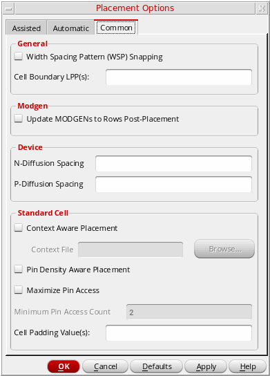

Setting Common Options in the Placement Options Form
The Common tab of the Placement Options form provides settings that are common to both Assisted and Automatic placement.

-
Open the Placement Options form by using one of the following methods:
The Common tab is divided into: General, Modgen, Device, and Standard Cell sections. -
In the General section:
- Select Width Spacing Pattern (WSP) Snapping to enable width-aware and constraint (CST)-aware snapping of instances and pins.
- Specify a list of Cell Boundary LPPs used to derive the cell boundary for standard cells and devices when running Place Like Schematic, Analog Placer, and Digital Placer. Only the shapes on the listed LPPs are considered when deriving the boundary.
- In the Modgen section, select Update MODGENS to Rows Post-Placement to regenerate Modgens after they are moved to a row region.
- In the Device section, specify the N-Diffusion Spacing and P-Diffusion Spacing values, which set the minimum spacing required between adjacent NMOS and PMOS chains, respectively.
-
In the Standard Cell section:
- Select Context Aware Placement to let standard cells be placed such that each cell is aware of the context of its neighboring cell.
- Select Pin Density Aware Placement to consider the pin densities of standard cells while optimizing placement and improving routability.
- Select Maximize Pin Access to increase the number of WSP tracks that overlap the pins on standard cells.
- Set Minimum Pin Access Count to the minimum number of pin access points to achieve during the process of pin access maximization.
- In the Cell Padding Value field, specify the space to the left and right of the master.
Related Topics
Setting the Assisted Placement Options in the Placement Options Form
Setting Automatic Placement Options in the Placement Options Form
Return to top